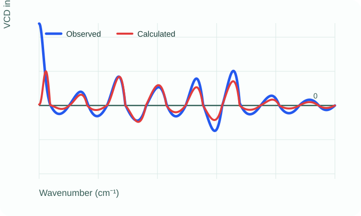

Prepare
Use two tab-delimited text files: frequency in column 1 and VCD strength in column 2.
Vibrational circular dichroism
SimIR/VCD helps researchers compare observed and calculated VCD spectra and assess confidence in an absolute-configuration assignment.

VCD spectrum comparison is often based on visual matching of bands, while theoretical approximations and conformational effects can complicate an assignment. SimIR/VCD computes the similarity score SV between an observed and calculated spectrum to provide a quantitative complement to visual inspection.
Use two tab-delimited text files: frequency in column 1 and VCD strength in column 2.
Submit the observed and calculated spectra to calculate their direct similarity.
Use SV alongside experimental context and scientific judgement—not as the sole basis for an assignment.
Reference: Shen J, Zhu C, Reiling S, Vaz R. Spectrochimica Acta Part A: Molecular and Biomolecular Spectroscopy. 2010;76:418–422.